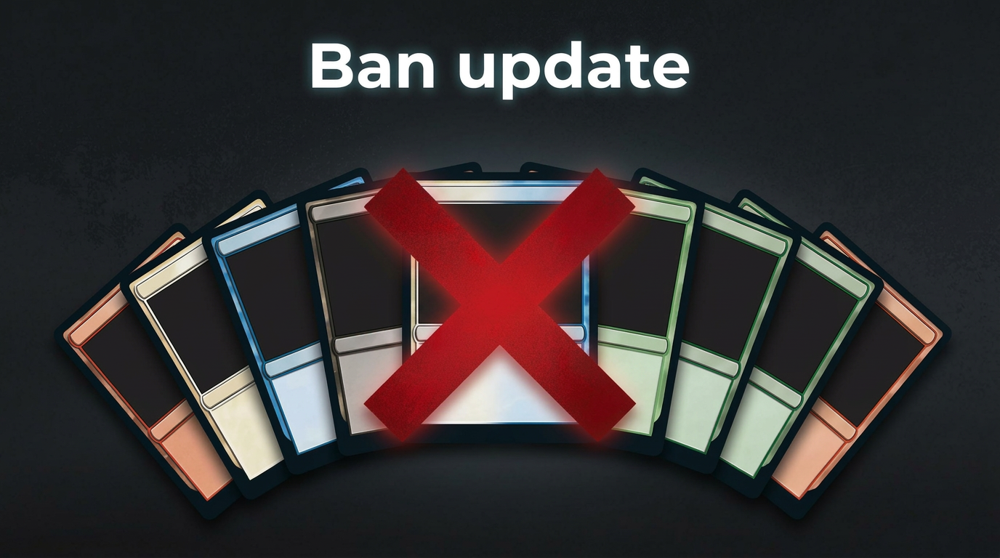

Banlist březen 2026 a Universes Beyond: jak změnily Standard, Historic a náladu hráčů
Wizards aktualizovali banlist pro Standard, Historic a další formáty a zároveň tlačí rekordní počet Universes Beyond setů v roce 2026. Podíváme se, které karty šly z kola ven, co to dělá s metagame a proč je část komunity z nových cross-overů nadšená, zatímco jiní mají pocit, že Magic ztrácí vlastní identitu.
Číst více